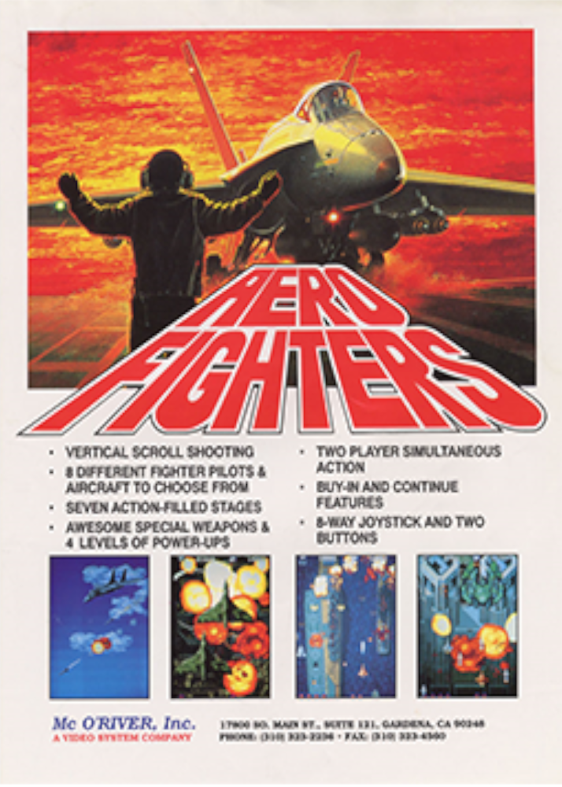
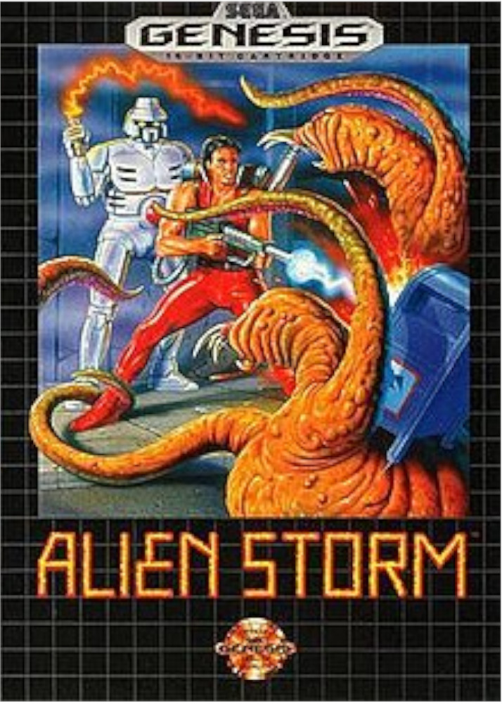
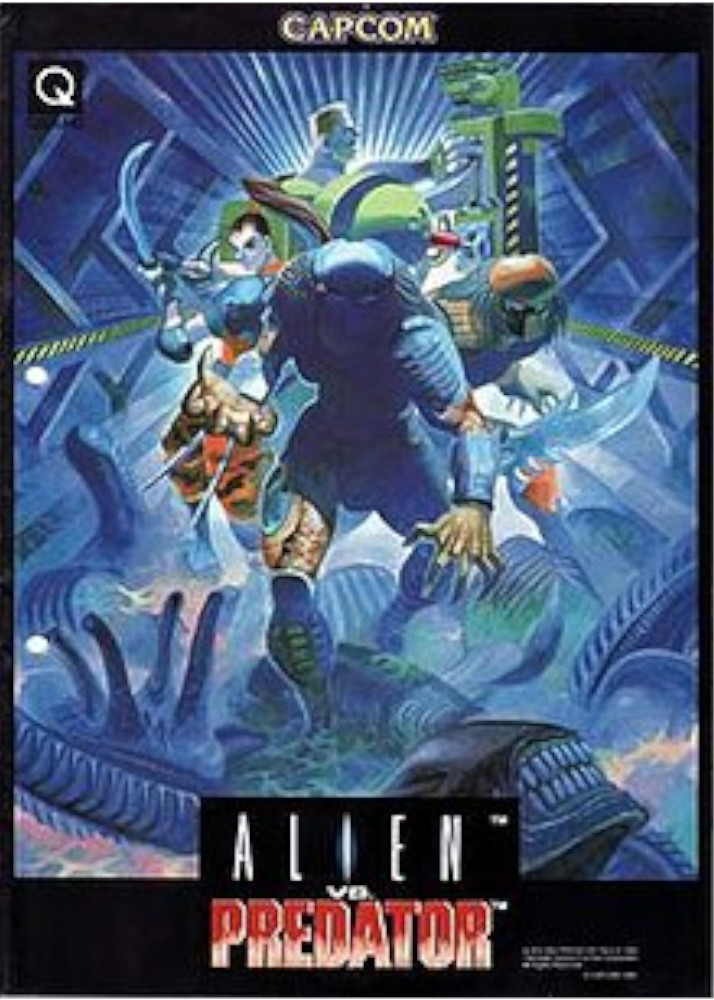
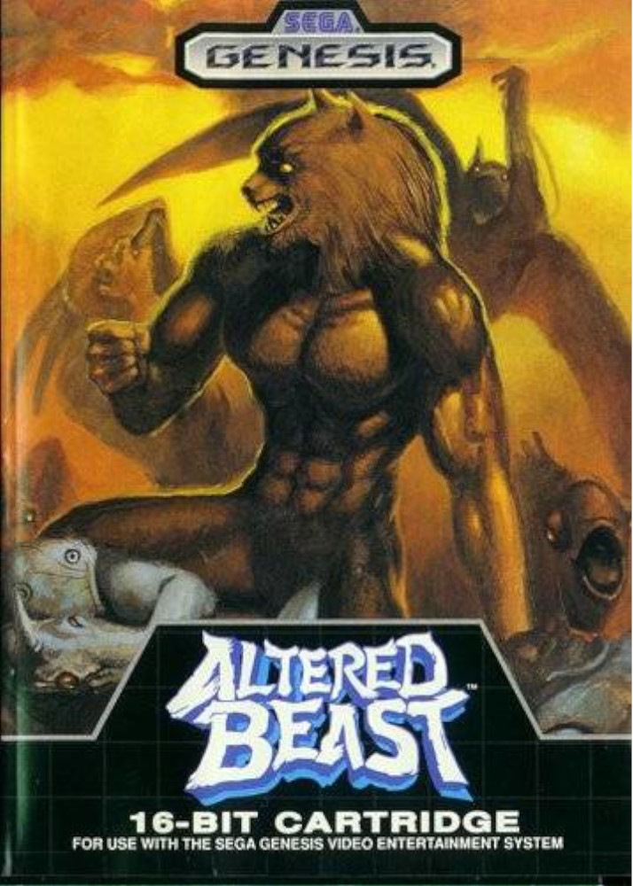
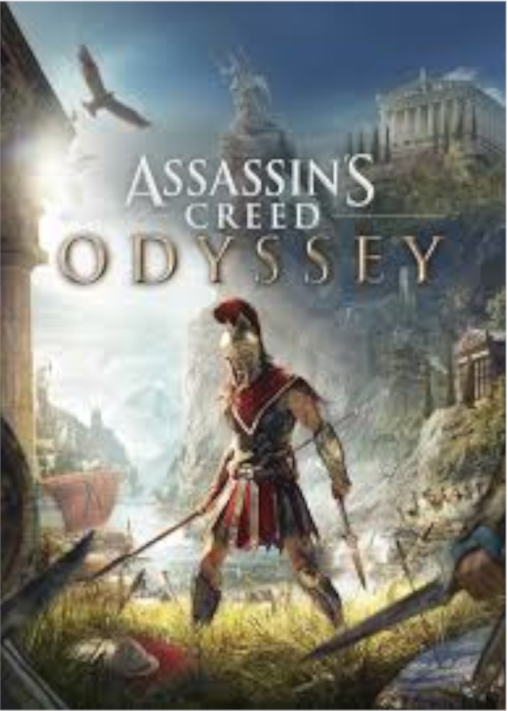
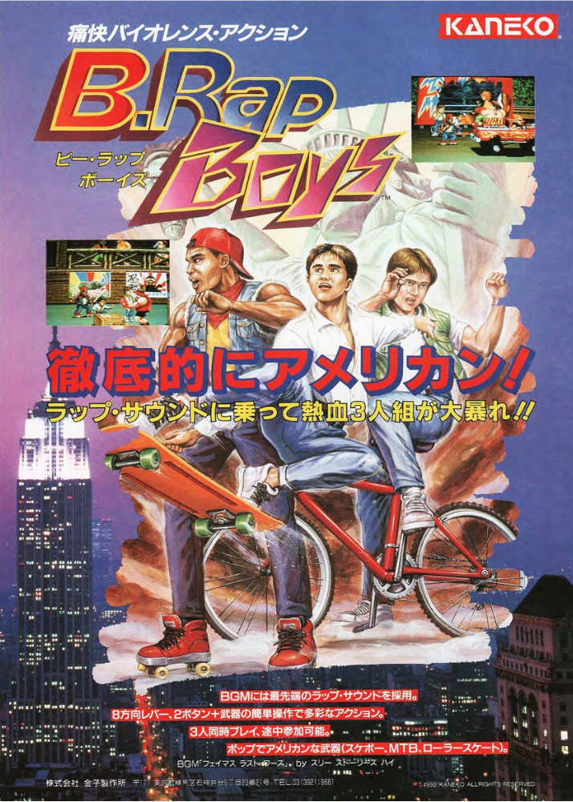
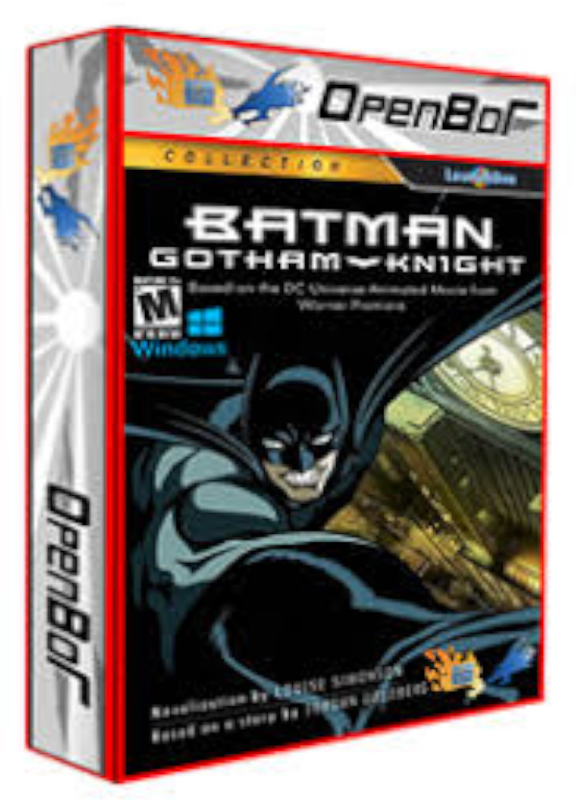

-
Aero Fighters - Arcade
Aero Fighters (conhecido como Sonic Wings no Japão) é um jogo eletrônico do gênero shoot 'em up com rolagem vertical, lançado em 1992 pela fabricante japonesa de jogos eletrônicos Video System.
Data de lançamento inicial: 1992 - 1993 - 1994 Plataformas: 92-Fliperama, 93-Super Famicom, 94-Super Nintendo. Gênero: Shoot'M'UP -
Alien Storm - Arcade
Alien Storm é um jogo de arcade desenvolvido pela Sega, posteriormente adaptada para Sega Mega Drive/Genesis e Sega Master System. A versão do Mega Drive também foi lançada no Virtual Console da Wii em 2007.
Data de lançamento inicial: 28 de junho 1991. Plataformas: ZX Spectrum, Amiga, Commodore 64, Atari ST, Amstrad CPC, Mega Drive, Microsoft Windows, Sega Master System, arcade, macOS, Linux Gênero: beat 'em up, science fiction video game, shooting gallery game -
Alien vs Predator - Arcade
Alien vs. Predator (エイリアンVSプレデター) é umvideogame beat 'em up de 1994 desenvolvido e lançado pela Capcom para o sistema de arcade CPS-2 . É baseado na franquia de ficção científica de mesmo nome . Apresentando um lutador original ao jogo: o Tenente Kurosawa , os jogadores assumem o controle de até três da seleção de quatro ciborgues e personagens Predadores em uma batalha contra as hordas de Xenomorfos e soldados humanos desonestos.
Data de lançamento inicial: Maio de 1994. Plataformas: Arcade Gênero: beat 'em up. -
Altered Beast - Sega Genesis
Altered Beast [a]é um jogo de arcade de 1988 desenvolvido e publicado pela Sega. O jogo se passa na Grécia Antiga e segue um personagem escolhido por Zeus para resgatar sua filha Athena do governante demoníaco do submundo, Neff. Ao coletar três power-ups em um nível, o personagem do jogador se transforma em uma das cinco bestas mágicas. Ele foi portado para vários consoles de videogame domésticos e computadores domésticos. Altered Beast foi o jogo de pack-in quando o Genesis foi lançado na América do Norte e no Mega Drive na Europa.
Data de lançamento inicial: 14 de junho de 1988 Plataformas: Arcade, MS-DOS, Amstrad CPC, MSX, Famicom, Atari ST, Amiga, Master System, Genesis, PC Engine, PC Engine Super CD-ROM2 Sistema, Commodore 64, Game Boy Advance. Gênero: beat 'em up. -
Assassins Creed - Game Pass
Assassin's Creed Odyssey é um jogo eletrônico de RPG de ação desenvolvido pela Ubisoft Quebec e publicado pela Ubisoft. É o décimo primeiro título principal da série Assassin's Creed e o sucessor de Assassin's Creed Origins de 2017, foi lançado em 5 de outubro de 2018, para Microsoft Windows, PlayStation 4 e Xbox One.[1] Durante a apresentação do serviço streaming Stadia da Google, foi anunciado que o jogo estaria disponível no serviço e foi posteriormente lançado em novembro de 2019.[2] A sua sequência, Assassin's Creed Valhalla foi lançada em novembro de 2020.
Data de lançamento inicial: 5 de outubro de 2018. Plataformas: Microsoft Windows, PlayStation 4, Xbox One. Gênero:RPG de ação. -
B. Rap Boys - Arcade
B.Rap Boys foi o último jogo e vencê-los na série Rap Brawler Boys por Kaneko. É uma sequência de DJ Boy e ainda empresta mecânicas de jogo da prequela. Lançado em 1992.
Data de lançamento inicial: 1992. Plataformas: Arcade Gênero: Fighting. -
Batman Gotham Knight - OpenBor
xxxxxxxx
Data de lançamento inicial:xxxx Plataformas: OpenBor Gênero: beat 'em up.